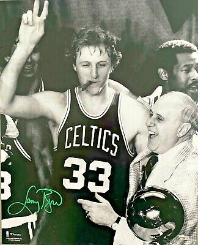

NBA Legend
Larry Bird
Boston Celtics
1979 - 1992
Small/Power Forward

Boston Celtics
1979 - 1992
Small/Power Forward
Won three NBA championships and two NBA Finals MVPs.
A member of the gold-medal-winning 1992 United States men's Olympic basketball team known as "The Dream Team."
Voted to the NBA's 50th Anniversary All-Time Team in 1996, was inducted into the Naismith Memorial Basketball Hall of Fame in 1998, and was inducted into the Hall of Fame again in 2010 as a member of "The Dream Team."
Bird was a 12-time NBA All-Star.
Received the NBA Most Valuable Player Award three consecutive times (1984–1986).
